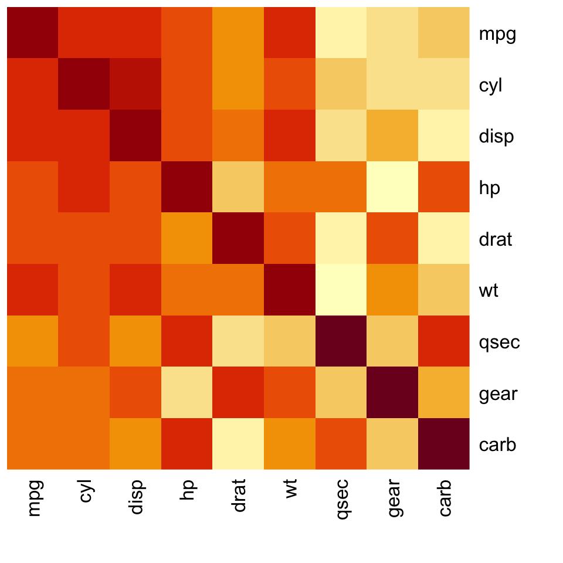
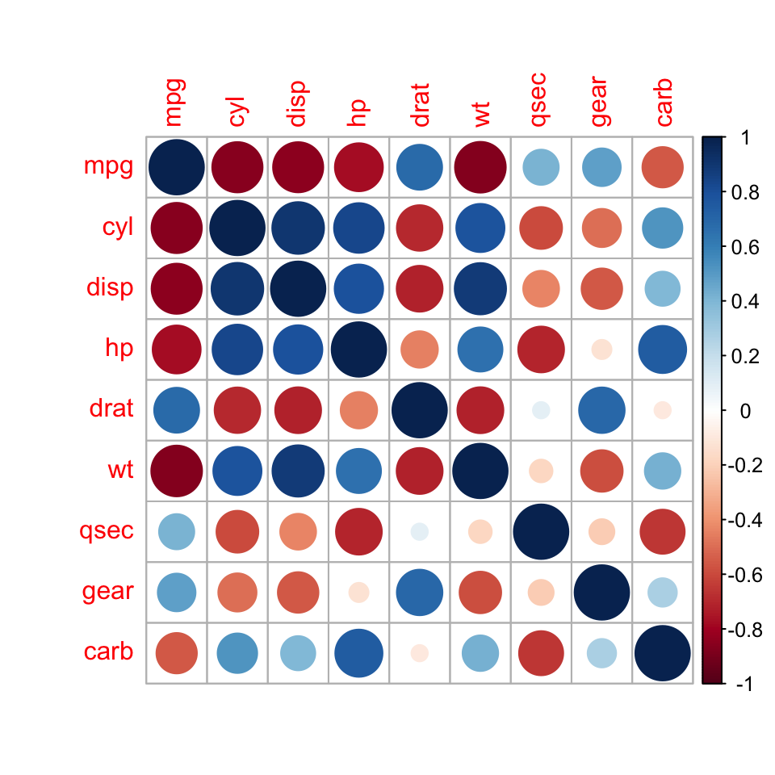
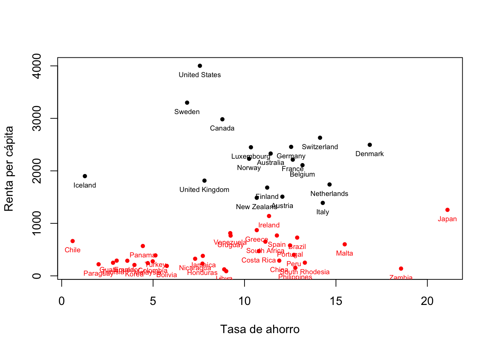
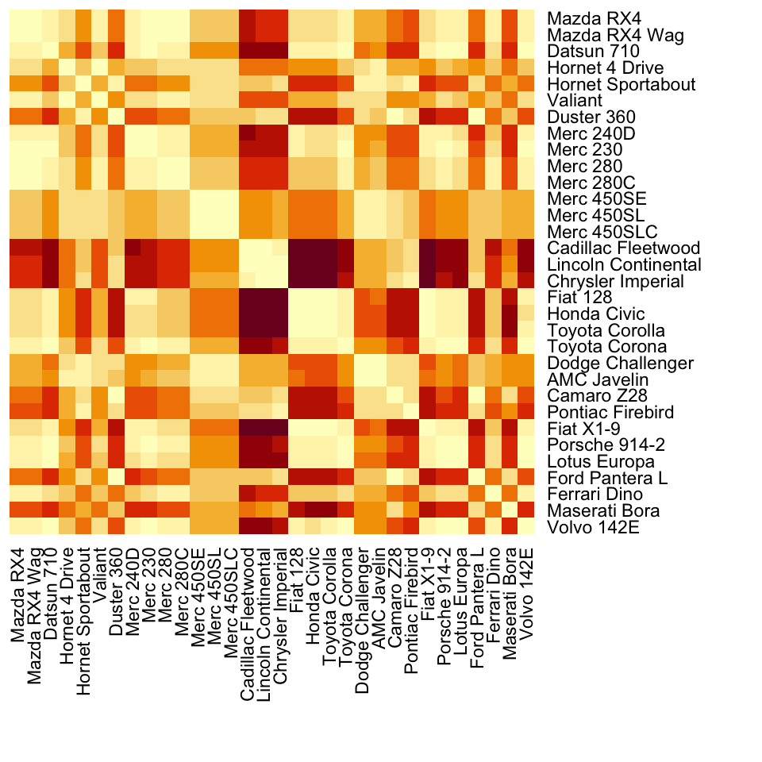
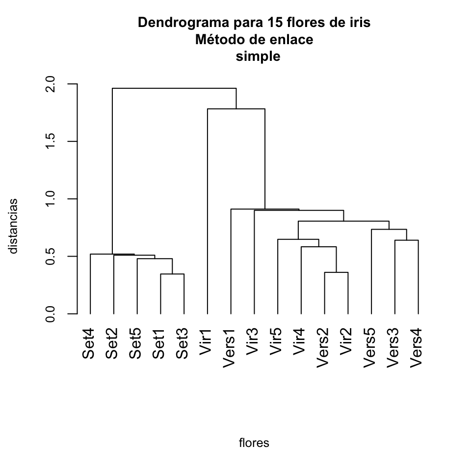
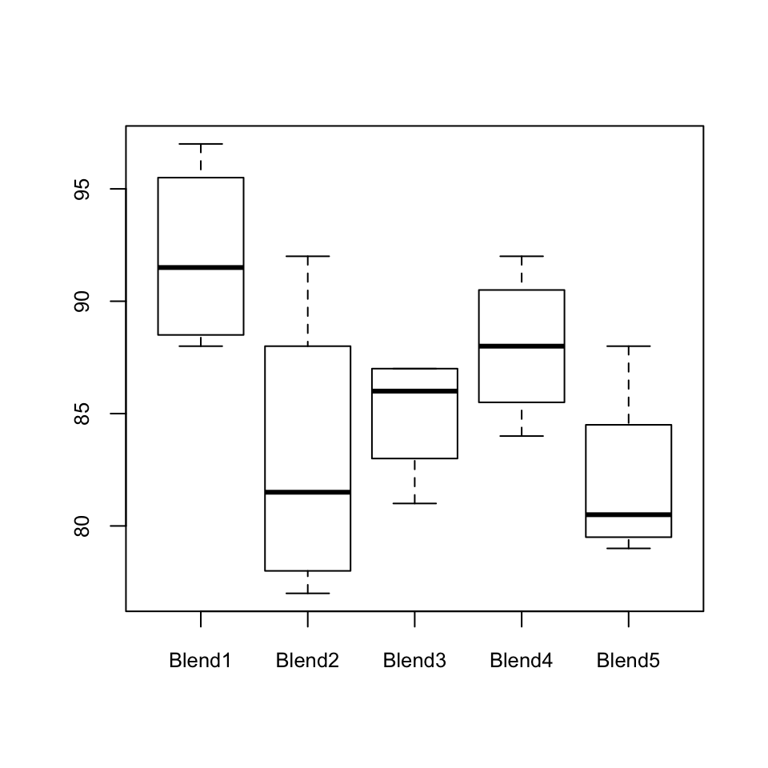
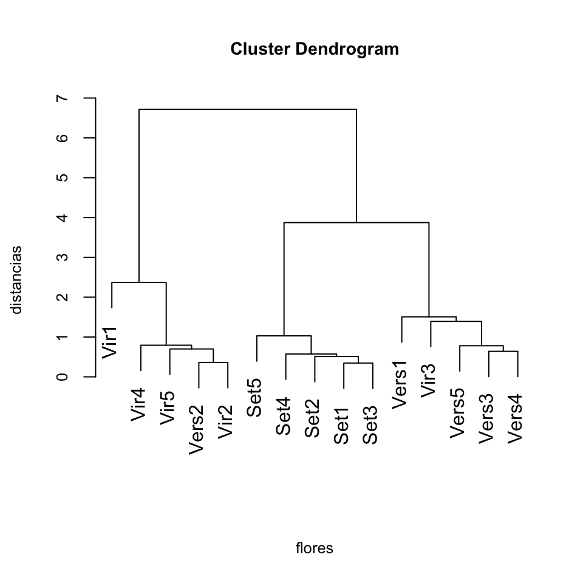
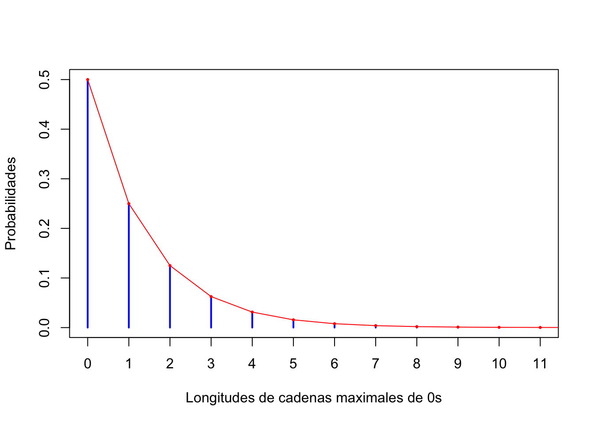
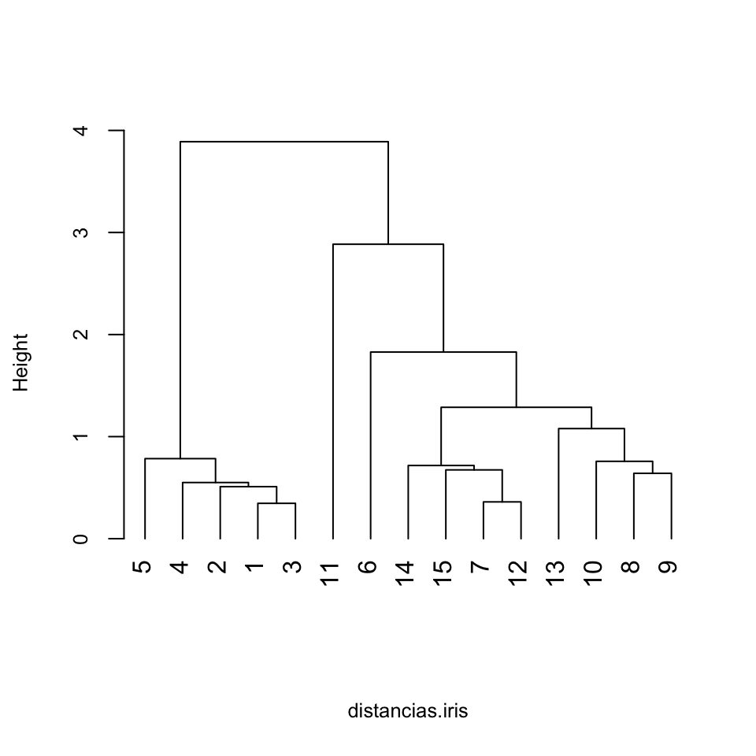
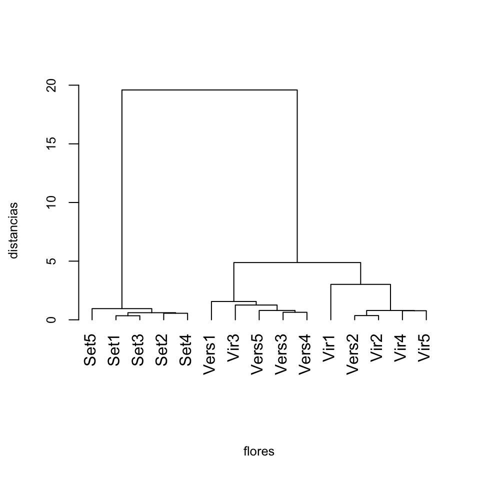

Lección 1 Gráficos avanzados
La capacidad que tiene R para representar gráficamente datos es asombrosa y explicar todos los gráficos que puede producir nos llevaría un curso entero. Por este motivo, en esta lección nos limitaremos a daros una idea de sus capacidades gráficas, explicando unos cuantos gráficos avanzados que se pueden producir con R de manera sencilla, sin entrar en el detalle de los algoritmos que los generan.
1.1 Nubes de palabras o de etiquetas (word clouds)
Una nube de palabras, o de etiquetas, (word cloud) es un gráfico formado por las palabras de un texto, organizadas en forma de nube. Las palabras se representan en la nube de manera que a mayor frecuencia en el texto y, por tanto, a mayor importancia en este sentido, mayor sea su tamaño. Las frecuencias de las palabras también se pueden indicar por medio de una gradación de color.
Para crear una nube de palabras con R, necesitamos cargar los paquetes tm (de text mining), para tratar y manipular textos, y wordcloud, para dibujar la nube de palabras.
En primer lugar veremos cómo usar las funciones del paquete tm con el fin de extraer la información de un documento que nos permitirá producir su nube de
palabras.
La estructura principal para el manejo de documentos en el paquete tm es el Corpus, que representa una colección de textos. La
implementación básica que lleva dicho paquete de un Corpus, y que es la que usaremos aquí, es el Corpus volátil,
VCorpus, que viene a ser una representación
volátil de los documentos en la memoria de R. Decimos volátil
porque una vez que el objeto de R en cuestión es borrado, el corpus de los
documentos también se borra de la memoria. Para cargar un conjunto de documentos en un VCorpus,
usamos la instrucción
nombre= VCorpus("lugar", readerControl=...)donde:
El primer parámetro es el lugar de donde R tiene que cargar los documentos a analizar. Si forman el contenido de un directorio, se especifica con
DirSource("directorio"), mientras que, para cargar el código fuente de una página web, se tiene que usarURISource("url"). Para conocer el resto de funciones que se pueden usar para entrar este lugar, podéis consultar la Ayuda de la funciónSource. En todas ellas se puede especificar conencodingla codificación de alfabeto; es conveniente hacerlo si los documentos contienen palabras acentuadas o caracteres especiales.El parámetro
readerControles unalistde dos componentes:readerylanguage. La componentereaderindica la función que ha de usar R para leer y procesar los documentos contenidos en el lugar especificado, que dependerá de su formato; aquí solo consideraremos el análisis de documentos en formato texto, que corresponde al valor por defecto dereader, y por lo tanto podemos omitir esta componente en lalist(si tenéis curiosidad, corresponde areader=readPlain). Si queréis procesar otro tipo de documentos, os recomendamos que, al menos al principio, primero los convirtáis en ficheros de texto ordinario.
Por su lado, el parámetro language indica el idioma en que está el texto, o los textos, a procesar. Se ha de entrar igualado al código ISO 639-2 del idioma 1 entrecomillado: en para inglés, spa para español, tlh para klingon, etc.
Vamos a desarrollar un ejemplo completo. Hemos guardado en un subdirectorio llamado Wordcloud del directorio de trabajo dos documentos: un fichero lomce.txt con el texto de la Ley orgánica 8/2013, de 9 de diciembre, para la mejora de la calidad educativa, más conocida como LOMCE,2 que será el que analizaremos, y un fichero introR.txt con el primer párrafo de esta lección, que no analizaremos y simplemente nos servirá para ver el efecto de algunas transformaciones.
Vamos a cargar estos dos documentos en un VCorpus llamado Prueba:
library(tm)
Prueba=VCorpus(DirSource("Wordcloud", encoding="UTF-8"),
readerControl=list(language="spa"))Hemos añadido encoding="UTF-8" porque así es como hemos guardado los ficheros de texto en nuestro ordenador y como contienen letras acentuadas, mejor curarnos en salud. Como están en español, hemos especificado language="spa" en readerControl, y en cambio no hemos especificado la componente reader de esta list porque se trata de ficheros de texto.
A continuación, vamos a inspeccionar el Corpus cargado. Aplicándole la función inspect, obtenemos cuántos documentos contiene y, para cada uno, su número de caracteres y su formato.
inspect(Prueba)## <<VCorpus>>
## Metadata: corpus specific: 0, document level (indexed): 0
## Content: documents: 2
##
## [[1]]
## <<PlainTextDocument>>
## Metadata: 7
## Content: chars: 3576
##
## [[2]]
## <<PlainTextDocument>>
## Metadata: 7
## Content: chars: 214377De esta manera vemos que R ha incorporado al VCorpus los documentos por orden alfabético de su título: el primero es el corto, introR.txt, y el segundo, el largo, lomce.txt.
Con la instrucción writeLines(as.character(VCorpus[[k]])) obtenemos en la consola el contenido completo del \(k\)-ésimo texto de nuestro VCorpus. Veamos, por ejemplo, el contenido del texto corto:
writeLines(as.character(Prueba[[1]]))## El alumnado es el centro y la razón de ser de la educación. El aprendizaje en la escuela debe ir dirigido a formar personas autónomas, críticas, con pensamiento propio.
## Todos los alumnos y alumnas tienen un sueño, todas las personas jóvenes tienen talento. Nuestras personas y sus talentos son lo más valioso que tenemos como país.
##
## Por ello, todos y cada uno de los alumnos y alumnas serán objeto de una atención, en la búsqueda de desarrollo del talento, que convierta la educación en el principal
## instrumento de movilidad social, ayude a superar barreras económicas y sociales y genere aspiraciones y ambiciones realizables para todos. Para todos ellos esta Ley Orgánica
## establece los necesarios mecanismos de permeabilidad y retorno entre las diferentes trayectorias y vías que en ella se articulan.
##
## Todos los estudiantes poseen talento, pero la naturaleza de este talento difiere entre ellos. En consecuencia, el sistema educativo debe contar con los mecanismos necesarios
## para reconocerlo y potenciarlo. El reconocimiento de esta diversidad entre alumno o alumna en sus habilidades y expectativas es el primer paso hacia el desarrollo de una
## estructura educativa que contemple diferentes trayectorias. La lógica de esta reforma se basa en la evolución hacia un sistema capaz de encauzar a los estudiantes hacia las
## trayectorias más adecuadas a sus capacidades, de forma que puedan hacer realidad sus aspiraciones y se conviertan en rutas que faciliten la empleabilidad y estimulen el
## espíritu emprendedor a través de la posibilidad, para el alumnado y sus padres, madres o tutores legales, de elegir las mejores opciones de desarrollo personal y profesional.
## Los estudiantes con problemas de rendimiento deben contar con programas específicos que mejoren sus posibilidades de continuar en el sistema.
##
## Detrás de los talentos de las personas están los valores que los vertebran, las actitudes que los impulsan, las competencias que los materializan y los conocimientos que
## los construyen. El reto de una sociedad democrática es crear las condiciones para que todos los alumnos y alumnas puedan adquirir y expresar sus talentos, en definitiva,
## el compromiso con una educación de calidad como soporte de la igualdad y la justicia social.
##
## La educación es el motor que promueve el bienestar de un país. El nivel educativo de los ciudadanos determina su capacidad de competir con éxito en el ámbito del panorama
## internacional y de afrontar los desafíos que se planteen en el futuro. Mejorar el nivel de los ciudadanos en el ámbito educativo supone abrirles las puertas a puestos de
## trabajo de alta cualificación, lo que representa una apuesta por el crecimiento económico y por un futuro mejor.
##
## En la esfera individual, la educación supone facilitar el desarrollo personal y la integración social. El nivel educativo determina, en gran manera, las metas y expectativas
## de la trayectoria vital, tanto en lo profesional como en lo personal, así como el conjunto de conocimientos, recursos y herramientas de aprendizaje que capacitan a una persona
## para cumplir con éxito sus objetivos.
##
## Solo un sistema educativo de calidad, inclusivo, integrador y exigente, garantiza la igualdad de oportunidades y hace efectiva la posibilidad de que cada alumno o alumna
## desarrolle el máximo de sus potencialidades. Solo desde la calidad se podrá hacer efectivo el mandato del artículo 27.2 de la Constitución española: «La educación tendrá
## por objeto el pleno desarrollo de la personalidad humana en el respeto a los principios democráticos de convivencia y a los derechos y libertades fundamentales».La capacidad que tiene R para representar gráficamente datos es asombrosa. Explicar todos los gráficos que puede producir R nos llevaría un curso entero, por lo que, en este capítulo, nos limitaremos a explicar la versión básica de unos cuantos gráficos avanzados que podemos producir con R de manera sencilla, para daros una idea de sus capacidades gráficas y sin entrar en detalles de los algoritmos que los producen.
Una vez que hemos guardado una serie de documentos en un VCorpus, tenemos que limpiarlos, en el sentido de eliminar, por ejemplo, signos de puntuación y palabras comunes sin ningún interés para que no aparezcan en la nube de palabras. Esto se lleva a cabo aplicando la función tm_map al VCorpus y a una transformación. Veamos algunos ejemplos:
- Convertimos todas las letras en minúsculas, para que R no considere diferentes dos palabras simplemente por la grafía de sus letras:
Prueba=tm_map(Prueba, tolower)- Eliminamos los signos de puntuación:
Prueba=tm_map(Prueba, removePunctuation)- Eliminamos las palabras comodín: preposiciones, artículos, algunos tiempos verbales de ser, estar y haber, etc. (si entráis en la consola la instrucción
stopwords("spanish")veréis la lista de las palabras que se eliminan):
Prueba=tm_map(Prueba, removeWords, stopwords("spanish"))En general, con Prueba=tm_map(Prueba, removeWords, vector) podemos borrar un vector de palabras. Por ejemplo, vamos a eliminar también la palabra artículo, para evitar que aparezca en la nube de palabras de la LOMCE, y r (ya en minúsculas) para ver cómo desaparece del texto corto.
Prueba=tm_map(Prueba, removeWords, c("artículo","r"))- Eliminamos los espacios en blanco extra:
Prueba=tm_map(Prueba, stripWhitespace)Veamos como ha quedado el texto corto tras estas transformaciones:
writeLines(as.character(Prueba[[1]]))## alumnado centro razón ser educación aprendizaje escuela debe ir dirigido formar personas autónomas críticas pensamiento propio
## alumnos alumnas sueño todas personas jóvenes talento personas talentos valioso país
##
## ello cada alumnos alumnas objeto atención búsqueda desarrollo talento convierta educación principal
## instrumento movilidad social ayude superar barreras económicas sociales genere aspiraciones ambiciones realizables ley orgánica
## establece necesarios mecanismos permeabilidad retorno diferentes trayectorias vías articulan
##
## estudiantes poseen talento naturaleza talento difiere consecuencia sistema educativo debe contar mecanismos necesarios
## reconocerlo potenciarlo reconocimiento diversidad alumno alumna habilidades expectativas primer paso hacia desarrollo
## estructura educativa contemple diferentes trayectorias lógica reforma basa evolución hacia sistema capaz encauzar estudiantes hacia
## trayectorias adecuadas capacidades forma puedan hacer realidad aspiraciones conviertan rutas faciliten empleabilidad estimulen
## espíritu emprendedor través posibilidad alumnado padres madres tutores legales elegir mejores opciones desarrollo personal profesional
## estudiantes problemas rendimiento deben contar programas específicos mejoren posibilidades continuar sistema
##
## detrás talentos personas valores vertebran actitudes impulsan competencias materializan conocimientos
## construyen reto sociedad democrática crear condiciones alumnos alumnas puedan adquirir expresar talentos definitiva
## compromiso educación calidad soporte igualdad justicia social
##
## educación motor promueve bienestar país nivel educativo ciudadanos determina capacidad competir éxito ámbito panorama
## internacional afrontar desafíos planteen futuro mejorar nivel ciudadanos ámbito educativo supone abrirles puertas puestos
## trabajo alta cualificación representa apuesta crecimiento económico futuro mejor
##
## esfera individual educación supone facilitar desarrollo personal integración social nivel educativo determina gran manera metas expectativas
## trayectoria vital profesional personal así conjunto conocimientos recursos herramientas aprendizaje capacitan persona
## cumplir éxito objetivos
##
## solo sistema educativo calidad inclusivo integrador exigente garantiza igualdad oportunidades hace efectiva posibilidad cada alumno alumna
## desarrolle máximo potencialidades solo calidad podrá hacer efectivo mandato 272 constitución española « educación
## objeto pleno desarrollo personalidad humana respeto principios democráticos convivencia derechos libertades fundamentales»Otras transformaciones posibles que nosotros no hemos aplicado, son: removeNumbers, para eliminar los números,
y, cargando el paquete SnowballC, la transformación stemDocument (con, en nuestro ejemplo, language="spanish"), que se queda sólo con las raíces de algunas palabras (y la nube de palabras que se produciría sería la de estas raíces: así, por ejemplo, en la de la LOMCE saldría alumn en lugar de alumnos y alumnas).
Ahora estamos en condiciones de construir la nube de palabras de la LOMCE. Para ello, usaremos la función wordcloud del paquete homónimo. Veamos su aplicación a nuestro caso concreto, y luego comentamos algunos parámetros:
library(wordcloud)
wordcloud(Prueba[[2]], scale=c(3,0.5), max.words=100,
rot.per=0.25, colors=brewer.pal(8, "Dark2"))Obtenemos el gráfico anterior, donde observamos que las palabras más repetidas y, por tanto, en este sentido más importantes, son educación, alumnos, alumnas, centros, etc.
Como vemos, la función wordcloud se aplica al documento, en este caso Prueba[[2]], y
sus parámetros principales son los siguientes:
scale: un vector de longitud 2 que sirve para indicar la escala, o los tamaños relativos, de las palabras. Su primera entrada indica el tamaño de la palabra más repetida y la segunda, el de la palabra menos repetida.max.words: el número máximo de palabras a mostrar.min.freq: la frecuencia mínima necesaria para que una palabra aparezca en el gráfico.rot.per: la proporción de palabras que se pueden mostrar giradas 90 grados.colors: la paleta de colores usados para representar las frecuencias, en orden creciente. Nosotros hemos usado una paleta del paqueteRColorBrewerexplicado en la Sección 11.5 (y que se carga automáticamente junto con el paquetewordcloud).
Algunos comentarios importantes:
La posición de las palabras en la nube es aleatoria, de manera que puede variar en cada ejecución de la instrucción.
R procura evitar solapamientos de palabras, y eso hace que, según cómo las vaya colocando, algunas no le quepan: en este caso os avisará con un
warningpara cada palabra omitida. Algunas posibles soluciones son volver a repetir el gráfico hasta que el azar produzca una combinación en la que quepan todas, reducir el número de palabras en la nube o reducir el rango de tamaños de las palabras. Otra posibilidad es usar el parámetrorandom.order=FALSE, que añade las palabras en orden decreciente de frecuencia, con lo que si hay palabras que no incluya, serán las menos importantes.Si, al guardar la imagen, modificáis sus dimensiones, las palabras se recolocarán y puede que se superpongan (si reducís el gráfico) o se separen (si lo ampliáis). Procurad, al guardar la imagen, usar la opción
View plot after savingpara controlar el resultado final.
1.2 Mapa de calor o heatmap
Uno de los gráficos más usados en estadística multidimensional para representar la relación existente entre un conjunto de individuos o de variables es un mapa de calor, o heatmap. Por ejemplo, a partir de una tabla de datos, podemos producir un mapa de calor que represente las correlaciones de sus variables, para poder visualizar los pares de variables con mayor y menor relación lineal, o un mapa de calor que represente las diferencias (en algún sentido) entre sus individuos, para poder visualizar qué individuos se parecen más o menos. En realidad, el principio es el mismo que cuando producíamos histogramas 2D en la Lección 11: se representan gráficamente las entradas de una matriz (en aquel caso, tablas de contingencia bidimensionales de variables agrupadas) de manera que el tamaño de las entradas se simbolice mediante una gradación de colores.
La función básica para producir mapas de calor es heatmap, y se aplica a una matriz.
Para ilustrar su funcionamiento, vamos a ver dos ejemplos sobre una misma tabla de datos, y aprovecharemos para explicar algunos de sus parámetros.
Ejemplo 1.1 Consideremos la tabla de datos que lleva R llamada mtcars. Dicha tabla de datos contiene los valores de las 11 características siguientes (las variables) de 32 vehículos (las filas):
mpg: El consumo del vehículo en millas por galón de combustible.cyl: Su número de cilindros.disp: Su cilindrada.hp: Su número de caballos de potencia.drat: Su relación del eje trasero.wt: Su peso (en libras/1000).qsec: El tiempo que tarda en recorrer un cuarto de milla.vs: El tipo de motor: Motor en V (valor 0) o en línea (valor 1).am: El tipo de transmisión: 0 automática, 1 manual.gear: El número de marchas hacia adelante.carb: El número de carburadores.
vs y am, la octava y la novena respectivamente). Las instrucciones que usamos son las siguientes:
mtcars2=mtcars[,-c(8,9)] #Eliminamos las variables binarias
round(abs(cor(mtcars2)),3)| mpg | cyl | disp | hp | drat | wt | qsec | gear | carb | |
|---|---|---|---|---|---|---|---|---|---|
| mpg | 1.000 | 0.852 | 0.848 | 0.776 | 0.681 | 0.868 | 0.419 | 0.480 | 0.551 |
| cyl | 0.852 | 1.000 | 0.902 | 0.832 | 0.700 | 0.782 | 0.591 | 0.493 | 0.527 |
| disp | 0.848 | 0.902 | 1.000 | 0.791 | 0.710 | 0.888 | 0.434 | 0.556 | 0.395 |
| hp | 0.776 | 0.832 | 0.791 | 1.000 | 0.449 | 0.659 | 0.708 | 0.126 | 0.750 |
| drat | 0.681 | 0.700 | 0.710 | 0.449 | 1.000 | 0.712 | 0.091 | 0.700 | 0.091 |
| wt | 0.868 | 0.782 | 0.888 | 0.659 | 0.712 | 1.000 | 0.175 | 0.583 | 0.428 |
| qsec | 0.419 | 0.591 | 0.434 | 0.708 | 0.091 | 0.175 | 1.000 | 0.213 | 0.656 |
| gear | 0.480 | 0.493 | 0.556 | 0.126 | 0.700 | 0.583 | 0.213 | 1.000 | 0.274 |
| carb | 0.551 | 0.527 | 0.395 | 0.750 | 0.091 | 0.428 | 0.656 | 0.274 | 1.000 |
heatmap(abs(cor(mtcars2)), Rowv=NA, Colv=NA, revC=TRUE) 
Podemos observar en el gráfico obtenido la correspondencia entre los colores de los cuadrados y las entradas de la matriz que representa: cuanto más rojo es el cuadrado correspondiente a un par de variables, menor es la entrada de la matriz y por lo tanto menos relación lineal existe entre ellas; y cuanto más claro,
mayor es la entrada de la matriz y por consiguiente su relación lineal. Así, podemos advertir en el gráfico que la variable cyl, el número de cilindros del vehículo, tiene mucha relación lineal con la cilindrada (disp), el consumo (mpg), la potencia (hp), el peso (wt) y la relación del eje trasero (drat); en cambio, la variable qsec (tiempo que tarda el vehículo en recorrer 1/4 de milla) sólo tiene relación lineal con la potencia, hp,
y el número de carburadores, carb.
Antes de continuar, vamos a explicar los parámetros usados en la aplicación anterior de la función heatmap: con Rowv=NA y Colv=NA impedimos que se añadan al gráfico dendrogramas por filas y por columnas, respectivamente (véase la Sección ), y con revC=TRUE hemos indicado que el orden de las variables de izquierda a derecha sea el mismo que de arriba abajo (por defecto, el orden de las filas se invierte).
La función corrplot del paquete homónimo permite producir mapas de calor de matrices de correlaciones más completos:
library(corrplot)
corrplot(cor(mtcars2))
En este caso hemos usado la matriz de correlaciones sin valor absoluto, porque no hace falta: los círculos más grandes indican una mayor correlación en valor absoluto y, por tanto, más relación lineal entre las variables involucradas, y los colores indican el signo de la correlación según el código descrito en la columna de la derecha. Si además hubiéramos querido que apareciera el valor de la correlación para cada par de variables, hubiéramos podido utilizar las opciones siguientes:
corrplot(cor(mtcars2), method="shade", shade.col=NA,
tl.col="black", tl.srt=45, addCoef.col="black")
El significado de los parámetros que hemos usado es el siguiente:
con method="shade" y shade.col=NA hemos indicado que queremos las celdas coloreadas homogéneamente, en vez de círculos; el parámetro tl.col especifica el color de las etiquetas de las filas y las columnas (por defecto es rojo, como en la anterior aplicación de corrplot); el parámetro tl.srt especifica el ángulo de inclinación de las etiquetas de las columnas en grados (por defecto, son verticales); y con addCoef.col="black" hemos indicado que incluya los valores de las correlaciones en las casillas, escritos en negro.
Os recomendamos consultar la Ayuda de la función para conocer el resto de parámetros disponibles.
mtcars. Las diferencias las cuantificaremos por medio de la distancia euclídea entre los vectores que definen las filas de la tabla de datos. Como en el ejemplo anterior, sólo vamos a considerar las variables numéricas, así que usaremos el data frame mtcars2. A modo de ejemplo, las filas de los vehículos Mazda RX4 y Valiant son
mtcars2[c("Mazda RX4","Valiant"),]| mpg | cyl | disp | hp | drat | wt | qsec | gear | carb | |
|---|---|---|---|---|---|---|---|---|---|
| Mazda RX4 | 21.0 | 6 | 160 | 110 | 3.90 | 2.62 | 16.46 | 4 | 4 |
| Valiant | 18.1 | 6 | 225 | 105 | 2.76 | 3.46 | 20.22 | 3 | 1 |
y su distancia euclídea es \[ \sqrt{(21-18.1)^2+(6-6)^2+(160-225)^2+(110-105)^2+\cdots +(4-1)^2}=65.4565. \]
Para hallar la matriz de distancias euclídeas entre las filas de la tabla de datos mtcars2 usamos la instrucción dist:
dist.mtcars=as.matrix(dist(mtcars2))
round(dist.mtcars[1:4,1:4],2) #Submatriz de las 4 primeras filas y columnas| Mazda RX4 | Mazda RX4 Wag | Datsun 710 | Hornet 4 Drive | |
|---|---|---|---|---|
| Mazda RX4 | 0.00 | 0.62 | 54.90 | 98.10 |
| Mazda RX4 Wag | 0.62 | 0.00 | 54.88 | 98.09 |
| Datsun 710 | 54.90 | 54.88 | 0.00 | 150.99 |
| Hornet 4 Drive | 98.10 | 98.09 | 150.99 | 0.00 |
La función dist calcula por defecto las distancias euclídeas entre las filas de una matriz o un data frame de variables numéricas. Para calcular alguna otra distancia, se ha de especificar con el parámetro method: consultad la Ayuda de la función para conocer los posibles valores de este parámetro. En el código anterior, hemos usado la función as.matrix para transformar el resultado de dist en una matriz ya que esta última función produce un objeto de clase dist y queremos que el resultado sea una matriz para poderle aplicar la función heatmap.
Dibujemos el heatmap de las distancias entre vehículos:
heatmap(dist.mtcars, margins=c(9,9), symm=TRUE, Rowv=NA, Colv=NA, revC=TRUE) 
El parámetro margins especifica el ancho de los márgenes donde se escriben los nombres de las filas y las columnas y lo hemos adaptado para que quepan los nombres de los vehículos;
el parámetro symm=TRUE indica a R que ha de considerar que la matriz es simétrica. El resto de los parámetros ya los hemos explicado antes. Esta función dispone de muchos más parámetros, que podéis consultar en su Ayuda.
La representación visual tiene el mismo significado que antes, pero referida a la matriz a la que hemos aplicado la función heatmap: cuanto más roja es la casilla, menor es la distancia entre los vehículos, y por lo tanto más parecidos son.
Así, por ejemplo, si observamos la columna del vehículo Mazda RX4, vemos que los vehículos más diferentes a él son Cadillac Fleetwood, Lincoln Continental y Chrysler Imperial, ya que aparecen con un color más cercano al blanco, y los más parecidos son Mazda RX4 Wag, Merc 280, Merc 280C, Merc 230, Volvo 142E, Toyota Corona,
Porsche 914-2, Merc 240D, etc.
1.3 Dendrogramas
Dada una tabla de datos podemos construir una matriz de distancias entre los individuos representados en ella, aplicando una distancia concreta a cada par de filas; es lo que hicimos en el Ejemplo 1.2, donde calculamos la distancia euclídea entre cada par de descripciones de tipo de coche. Una vez construida dicha matriz de distancias, podemos ir agrupando los individuos de la tabla de datos usando algún algoritmo de agrupamiento, o clustering jerárquico.
Muchos algoritmos de clustering jerárquico siguen una misma estrategia. En un primer paso, se agrupan los dos individuos más parecidos (más cercanos según la distancia usada) en un grupo y se los sustituye por este grupo, al que se considera un nuevo individuo virtual. A partir de aquí, en cada paso, se agrupan en un nuevo grupo los dos individuos (originales o virtuales) más cercanos y se los sustituye por el grupo que forman. El algoritmo termina cuando queda un único grupo. Los diferentes algoritmos de este tipo, denominados genéricamente aglomerativos, se distinguen básicamente según la manera como se define la distancia entre grupos a partir de las distancias entre sus individuos; aquí no entraremos en detalle y nos limitaremos a usar el algoritmo que lleva implementado R por defecto (el llamado método de enlace completo: la distancia entre dos grupos es el máximo de las distancias entre sus elementos). 3
Un dendrograma es entonces una representación gráfica del orden en el que se han ido realizando dichas agrupaciones y de las distancias entre los pares de individuos (originales y virtuales) que se han ido uniendo. Así podemos visualizar qué individuos se parecen más o si aparece de manera natural alguna clasificación de los individuos.
Veamos un ejemplo detallado.
La tabla de datos all.mammals.milk.1956 que lleva el paquete cluster.datasets contiene información sobre 5 variables numéricas relativas a la composición de la leche materna de 25 especies de mamíferos. Las variables de esta tabla de datos son:
name: El nombre del animal.water: Porcentaje de agua en la leche.protein: Porcentaje de proteína.fat: Porcentaje de grasa.lactose: Porcentaje de lactosa.ash: Porcentaje de ceniza.
Démosle un vistazo.
library(cluster.datasets)
data(all.mammals.milk.1956)
AMM=all.mammals.milk.1956
str(AMM)## 'data.frame': 25 obs. of 6 variables:
## $ name : chr "Horse" "Orangutan" "Monkey" "Donkey" ...
## $ water : num 90.1 88.5 88.4 90.3 90.4 87.7 86.9 82.1 81.9 81.6 ...
## $ protein: num 2.6 1.4 2.2 1.7 0.6 3.5 4.8 5.9 7.4 10.1 ...
## $ fat : num 1 3.5 2.7 1.4 4.5 3.4 1.7 7.9 7.2 6.3 ...
## $ lactose: num 6.9 6 6.4 6.2 4.4 4.8 5.7 4.7 2.7 4.4 ...
## $ ash : num 0.35 0.24 0.18 0.4 0.1 0.71 0.9 0.78 0.85 0.75 ...head(AMM)| name | water | protein | fat | lactose | ash |
|---|---|---|---|---|---|
| Horse | 90.1 | 2.6 | 1.0 | 6.9 | 0.35 |
| Orangutan | 88.5 | 1.4 | 3.5 | 6.0 | 0.24 |
| Monkey | 88.4 | 2.2 | 2.7 | 6.4 | 0.18 |
| Donkey | 90.3 | 1.7 | 1.4 | 6.2 | 0.40 |
| Hippo | 90.4 | 0.6 | 4.5 | 4.4 | 0.10 |
| Camel | 87.7 | 3.5 | 3.4 | 4.8 | 0.71 |
Para cuantificar la diferencia entre las composiciones de la leche de estos mamíferos, usaremos de nuevo la distancia euclídea entre sus vectores de valores de variables numéricas.
dist.AMM=dist(AMM[,2:6])
round(as.matrix(dist.AMM)[1:6,1:6],3)| 1 | 2 | 3 | 4 | 5 | 6 |
|---|---|---|---|---|---|
| 0.000 | 3.327 | 2.494 | 1.226 | 4.759 | 4.107 |
| 3.327 | 0.000 | 1.206 | 2.794 | 2.798 | 2.592 |
| 2.494 | 1.206 | 0.000 | 2.375 | 3.716 | 2.348 |
| 1.226 | 2.794 | 2.375 | 0.000 | 3.763 | 4.007 |
| 4.759 | 2.798 | 3.716 | 3.763 | 0.000 | 4.176 |
| 4.107 | 2.592 | 2.348 | 4.007 | 4.176 | 0.000 |
Hemos transformado el objeto dist en una matriz para poder consultar algunas entradas, pero lo mantenemos como objeto de tipo dist para construir su dendrograma.
Una vez se dispone de la matriz de distancias entre los individuos (en este caso, mamíferos), se calcula su clustering jerárquico aplicándole la función hclust y se convierte el resultado de esta función en un dendrograma usando as.dendrogram.
La función hclust permite especificar el tipo de algoritmo de agrupamiento que queremos usar por medio del parámetro method; aquí usaremos el método por defecto.
dend.AMM=as.dendrogram(hclust(dist.AMM))Y ahora ya podemos dibujar este dendrograma. Hay muchas opciones para hacerlo con R. La básica es aplicarle simplemente la función plot:
plot(dend.AMM)
En este gráfico, los grupos se representan mediante líneas horizontales y las alturas representan distancias, de manera que la altura a la que se unen dos grupos es la distancia entre ellos. Así, este dendrograma nos muestra, por ejemplo, que la composición de la leche de los animales 24 y 25 (foca y delfín) es diferente de la del resto, formando un grupo propio que no se ha unido al resto de animales hasta el último paso. En cambio, la ballena (el 23), que comparte hábitat y dieta con ellos, se agrupa con el ciervo y el reno (21 y 22). Por otro lado, cortando por una línea horizontal imaginaria a altura 30, podemos observar que se forman tres grupos muy claros.
En un dendrograma producido a partir de las distancias entre las filas de un data frame, los individuos se representan mediante los identificadores de las filas: en nuestro ejemplo, números. Si queremos los nombres de los animales como etiquetas, una posibilidad es modificar el data frame AMM usando como identificadores de las filas los nombres de los animales; y ya que estamos, podemos eliminar esta variable del data frame resultante:
AMM.nombres=AMM
rownames(AMM.nombres)=AMM.nombres$name
AMM.nombres=AMM.nombres[,-1]
head(AMM.nombres)| water | protein | fat | lactose | ash | |
|---|---|---|---|---|---|
| Horse | 90.1 | 2.6 | 1.0 | 6.9 | 0.35 |
| Orangutan | 88.5 | 1.4 | 3.5 | 6.0 | 0.24 |
| Monkey | 88.4 | 2.2 | 2.7 | 6.4 | 0.18 |
| Donkey | 90.3 | 1.7 | 1.4 | 6.2 | 0.40 |
| Hippo | 90.4 | 0.6 | 4.5 | 4.4 | 0.10 |
| Camel | 87.7 | 3.5 | 3.4 | 4.8 | 0.71 |
plot(as.dendrogram(hclust(dist(AMM.nombres))))
En el gráfico anterior podemos leer (más o menos) los nombres de los animales sin tener que ir a consultar el data frame.
Aparte de los parámetros usuales de la función plot, dos parámetros interesantes cuando se aplica a un dendrograma son horiz=TRUE, que lo dibuja horizontal, y type="triangle", que dibuja las ramificaciones triangulares en vez de rectangulares.
Para tener más control sobre el aspecto de un dendrograma, por ejemplo cambiar sus etiquetas sin modificar el data frame original, escribirlas en un tamaño menor o mayor o colorear ramas o etiquetas a fin de añadir información al dendrograma, lo más sencillo es utilizar algunas funciones específicas aportadas por diversos paquetes. Aquí vamos a explicar algunas funcionalidades del paquete dendextend.
A modo de ejemplo, una vez cargado este paquete, para cambiar directamente las etiquetas del dendrograma del data frame AMM, podemos usar de manera natural la función labels, que nos da las etiquetas de las hojas.
library(dendextend)
L=labels(dend.AMM)
L## [1] 24 25 10 8 11 16 9 14 7 15 6 12 5 2 3 1 4 13 17 19 20 18 23
## [24] 21 22labels(dend.AMM)=AMM$name[L]
labels(dend.AMM)## [1] "Seal" "Dolphin" "Cat" "Buffalo" "Fox"
## [6] "Sheep" "Guinea Pig" "Pig" "Bison" "Zebra"
## [11] "Camel" "Llama" "Hippo" "Orangutan" "Monkey"
## [16] "Horse" "Donkey" "Mule" "Dog" "Rabbit"
## [21] "Rat" "Elephant" "Whale" "Deer" "Reindeer"La función labels aplicada a un dendrograma nos da las etiquetas de las hojas de izquierda a derecha, y con el paquete dendextend nos permite también modificar estas etiquetas. Naturalmente, a cada etiqueta (en nuestro ejemplo, número de fila) le tenemos que hacer corresponder el nombre del animal que le toca: por eso usamos labels(dend.AMM)=AMM$name[L] y no labels(dend.AMM)=AMM$name a secas, que a la primera etiqueta del dendrograma (la 25) le asignaría el primer nombre de animal, correspondiente a la etiqueta 1.
Ahora que ya hemos modificado las etiquetas del dendrograma, podemos modificar su apariencia de cara a representarlo gráficamente. Para ello podemos usar la función set, cuya sintaxis básica es
set(dendrograma, what="característica", valor)Encontraréis la lista completa de las características que podemos usar en la Ayuda de la función.
Pero cuidado, set no modifica el dendrograma permanentemente, solo temporalmente. Si queréis modificar el dendrograma, tenéis que usar
dendrograma =set(dendrograma, what="característica", valor)Si queremos cambiar más de una característica de golpe, es muy cómodo usar la notación encadenada de funciones, en la que a un objeto se le van aplicando funciones una tras otra separándolas con el signo >. 4
En este caso, no se entra el dendrograma dentro de set, sino al principio de la cadena.
Por ejemplo, para reducir el tamaño de letra de las etiquetas (para que así quepan en el gráfico) y escribirlas en rojo, podemos entrar el código siguiente:
dend.AMM%>%
set(what="labels_col", "red")%>% #Colores de las etiquetas
set(what="labels_cex", 0.8)%>% #Tamaño de las etiquetas
plot(main="Dendrograma con etiquetas coloreadas\n y reducidas")
Observad la sintaxis: se toma el objeto dend.AMM, se le aplican las dos transformaciones, una tras otra, y al final se le aplica plot con los parámetros que deseemos.
No hemos modificado el dendrograma dend.AMM, solo su apariencia en el gráfico.
La posibilidad de colorear las etiquetas, o las aristas, puede mejorar la comprensión del dendrograma, o incluso añadir información. Veamos dos aplicaciones:
- Para distinguir visualmente los principales grupos que se forman en el dendrograma, y por ejemplo usar un color en cada grupo, podemos usar el parámetro
kigualado al número de grupos que queremos reconocer. Por ejemplo,
dend.AMM%>%
set(what="labels_cex", 0.8)%>%
set(what="labels_col", c("red","blue","green"), k=3)%>%
set(what="branches_k_color",c("red","blue","green"),k=3)%>% #Colores de las ramas
plot(main="Dendrograma con 3 grupos resaltados")
- Podemos clasificar los individuos representados en el dendrograma mediante un factor
y usar este factor para asignar colores a las etiquetas para así ver si los grupos que produce el dendrograma se corresponden con la clasificación según el factor. Como nuestro data frame
AMMno tiene ninguna variable factor que podamos usar, vamos a añadirle una que represente la dieta principal del animal: C para carnívoro, H para herbívoro, O para omnívoro, P para piscívoro.
AMM$diet=as.factor(c("H","O","O","H","H","H","H","H","H",
"C","C","H","H","O","H","H","C","H","H","O","H","H","P",
"P","P"))
head(AMM)| name | water | protein | fat | lactose | ash | diet |
|---|---|---|---|---|---|---|
| Horse | 90.1 | 2.6 | 1.0 | 6.9 | 0.35 | H |
| Orangutan | 88.5 | 1.4 | 3.5 | 6.0 | 0.24 | O |
| Monkey | 88.4 | 2.2 | 2.7 | 6.4 | 0.18 | O |
| Donkey | 90.3 | 1.7 | 1.4 | 6.2 | 0.40 | H |
| Hippo | 90.4 | 0.6 | 4.5 | 4.4 | 0.10 | H |
| Camel | 87.7 | 3.5 | 3.4 | 4.8 | 0.71 | H |
Ahora colorearemos las etiquetas del dendrograma según su dieta, y aprovecharemos para ver otra manera de usar set, definiendo un nuevo dendrograma dend.AMM2 donde los cambios realizados sobre dend.AMM por las diferentes aplicaciones de set sean permanentes.
dend.AMM2=dend.AMM%>%
set(what="labels_cex", 0.8)%>% #Tamaño de etiquetas
set(what="labels",AMM$name[L])%>% #Nombres en las etiquetas
set(what="labels_col",as.numeric(AMM$diet[L])) #Colores según la dieta
plot(dend.AMM2, main="Dendrograma de mamíferos clasificados
\n según la dieta")
Vemos que la similitud de la composición de la leche materna no tiene mucha correspondencia con la dieta.
Para más información sobre las posibilidades de dendextend y su interacción con otros paquetes que dibujan dendrogramas, consultad https://cran.r-project.org/web/packages/dendextend/vignettes/introduction.html. Por ejemplo,
podemos modificar un dendrograma con set y luego
aplicarle la función circlize_dendrogram del paquete circlize para obtener una representación circular. Véase el gráfico siguiente:
library(circlize)
circlize_dendrogram(dend.AMM2)
1.4 Gráficos de burbujas o bubbles
Hay situaciones en las que nos interesa resaltar la importancia de una variable dibujando figuras geométricas (círculos, cuadrados, etc.) de tamaño proporcional a la importancia del valor de la variable. Este tipo de gráficos se
denominan gráficos de burbujas, o bubbles, y la función básica para producirlos es symbols. Su sintáxis básica es
symbols(x, y, "parámetro_figura" =z, ...)donde x e y son los vectores de primeras y segundas coordenadas de los centros de las figuras a dibujar, el
parámetro_figura indica el tipo de figuras (circles para círculos, squares para cuadrados, stars para estrellas, etc.), y z es el vector de los tamaños lineales de las figuras: radio para los círculos, lado para los cuadrados, longitud del rayo para las estrellas, etc. Además se pueden usar los dos parámetros siguientes para añadir colores a las figuras:
fg: el color de la frontera de los símbolos (por defecto, negro).bg: su color de relleno.
Y finalmente, se pueden usar los parámetros usuales de plot; para más información, incluida la lista de figuras disponibles, consultad la Ayuda de la función.
Veamos un ejemplo. Consideremos la tabla de datos savings que lleva el paquete faraway. Dicha tabla de datos nos da los 5 indicadores económicos siguientes de 50 países durante el período 1960–1970:
sr: la tasa de ahorro, savings rate, de cada país.pop15: su porcentaje de población menor de 15 años.pop75: su porcentaje de población mayor de 75 años.dpi: su renta per cápita en dólares.ddpi: su tasa de crecimiento como porcentaje de su renta per cápita.
Vamos a producir un gráfico de burbujas de la tasa de ahorro de cada país en función de su renta per cápita, donde la
variable burbuja será la tasa de crecimiento; es decir, para cada país, dibujaremos una burbuja centrada en el punto de coordenadas (renta per cápita, tasa de ahorro) de diámetro proporcional a su tasa de crecimiento.
Además, colorearemos las burbujas según una escala de colores ocres que represente el porcentaje de la población menor de 15 años: cuanto más oscura sea la burbuja, mayor es dicho porcentaje. El código para producir el gráfico, tras cargar los paquetes faraway (para tener acceso a los datos) y RColorBrewer (para poder definir la paleta de colores), es el siguiente:
library(faraway)
library(RColorBrewer)
#Agrupamos los porcentajes de población menor de 15 años en 9 grupos
porcentajes15=as.numeric(cut(savings$pop15, 9))
#Definimos nuestra paleta en función de los valores de la variable anterior
colores=brewer.pal(9,"YlOrBr")[porcentajes15]
#Dibujamos el gráfico de burbujas
symbols(savings$dpi, savings$sr, circles=savings$ddpi,
bg=colores, xlab="Renta per cápita", ylab="Tasa de ahorro")
#Escribimos el nombre de cada país en el centro de su burbuja
text(savings$dpi,savings$sr, rownames(savings), cex=0.75) 
A simple vista se puede observar, por ejemplo, que los Estados Unidos tienen la renta per cápita más alta, una tasa de ahorro entre moderada y baja, una tasa de crecimiento de la renta per cápita baja y un porcentaje de población menor de 15 años también bajo; en cambio, Japón tiene una renta per cápita más baja, una tasa de ahorro y una tasa de crecimiento de la renta per cápita mucho más altas pero la población menor de 15 años sigue siendo baja. También se observa que, en general, el porcentaje de población menor de 15 años en los países más desarrollados es mucho menor que en los países menos desarrollados.
Este tipo de gráficos, tal cual los produce R, tienen un defecto: como los tamaños de las burbujas se indican por medio de una dimensión lineal, su área crece con el cuadrado de dicha dimensión; por ejemplo, en nuestro gráfico, la burbuja de un país con el doble de tasa de crecimiento que otro tiene un área cuatro veces mayor que la de este otro país. Como, instintivamente, comparamos áreas y no diámetros, esto puede llevar a confusión. La solución es sencilla: si queremos que las proporcionales a las tasas de crecimiento sean las áreas de los círculos, cuadrados, rectángulos, etc., y no sus amplitudes, basta entrar como dimensiones de las figuras sus raíces cuadradas. Así, el código siguiente produce un gráfico que, para nuestro gusto, representa mejor los datos.
symbols(savings$dpi, savings$sr, circles=sqrt(savings$ddpi),
bg=colores, xlab="Renta per cápita", ylab="Tasa de ahorro")
text(savings$dpi,savings$sr, rownames(savings), cex=0.75) 
1.5 Gráficos de corrientes o streamgraphs
En los últimos 10 años se han puesto de moda un tipo de gráficos que sirven para visualizar cómo diversas cantidades varían conjuntamente a lo largo del tiempo: son los llamados gráficos de corrientes, o streamgraphs. Con R este tipo de gráficos se producen fácilmente con el paquete streamgraph, que aún no está disponible en el servidor de la CRAN, 5 pero puede instalarse desde GitHub. Para ello no podemos emplear el instalador de paquetes de RStudio ni la función install.packages, sino la función específica install_github del paquete devtools, aplicado al url del paquete (que tenemos que conocer). Así, para instalar y cargar el paquete streamgraph, a día de hoy hay que ejecutar el código siguiente:
library(devtools)
install_github("hrbrmstr/streamgraph",force=TRUE)
library(streamgraph)Ahora que ya lo tenemos cargado, vamos a producir un streamgraph de los diferentes géneros de películas desde los años 30 hasta la actualidad. Para ello, usaremos la tabla de datos movies, con información de 58,788 películas, que lleva el paquete ggplot2movies.
library(ggplot2movies)
data(movies)
str(movies)## Classes 'tbl_df', 'tbl' and 'data.frame': 58788 obs. of 24 variables:
## $ title : chr "$" "$1000 a Touchdown" "$21 a Day Once a Month" "$40,000" ...
## $ year : int 1971 1939 1941 1996 1975 2000 2002 2002 1987 1917 ...
## $ length : int 121 71 7 70 71 91 93 25 97 61 ...
## $ budget : int NA NA NA NA NA NA NA NA NA NA ...
## $ rating : num 6.4 6 8.2 8.2 3.4 4.3 5.3 6.7 6.6 6 ...
## $ votes : int 348 20 5 6 17 45 200 24 18 51 ...
## $ r1 : num 4.5 0 0 14.5 24.5 4.5 4.5 4.5 4.5 4.5 ...
## $ r2 : num 4.5 14.5 0 0 4.5 4.5 0 4.5 4.5 0 ...
## $ r3 : num 4.5 4.5 0 0 0 4.5 4.5 4.5 4.5 4.5 ...
## $ r4 : num 4.5 24.5 0 0 14.5 14.5 4.5 4.5 0 4.5 ...
## $ r5 : num 14.5 14.5 0 0 14.5 14.5 24.5 4.5 0 4.5 ...
## $ r6 : num 24.5 14.5 24.5 0 4.5 14.5 24.5 14.5 0 44.5 ...
## $ r7 : num 24.5 14.5 0 0 0 4.5 14.5 14.5 34.5 14.5 ...
## $ r8 : num 14.5 4.5 44.5 0 0 4.5 4.5 14.5 14.5 4.5 ...
## $ r9 : num 4.5 4.5 24.5 34.5 0 14.5 4.5 4.5 4.5 4.5 ...
## $ r10 : num 4.5 14.5 24.5 45.5 24.5 14.5 14.5 14.5 24.5 4.5 ...
## $ mpaa : chr "" "" "" "" ...
## $ Action : int 0 0 0 0 0 0 1 0 0 0 ...
## $ Animation : int 0 0 1 0 0 0 0 0 0 0 ...
## $ Comedy : int 1 1 0 1 0 0 0 0 0 0 ...
## $ Drama : int 1 0 0 0 0 1 1 0 1 0 ...
## $ Documentary: int 0 0 0 0 0 0 0 1 0 0 ...
## $ Romance : int 0 0 0 0 0 0 0 0 0 0 ...
## $ Short : int 0 0 1 0 0 0 0 1 0 0 ...De esta tabla de datos nos vamos a quedar solo con las variables year (año de estreno) y
Action, Animation, Comedy, Drama, Documentary, Romance y Short, variables binarias que indican si la película entra o no en cada una de las categorías siguientes: acción, animación, comedia, drama, documental, romántica y cortometraje, respectivamente.
movies.small=movies[,c(2,18:24)]
str(movies.small)## Classes 'tbl_df', 'tbl' and 'data.frame': 58788 obs. of 8 variables:
## $ year : int 1971 1939 1941 1996 1975 2000 2002 2002 1987 1917 ...
## $ Action : int 0 0 0 0 0 0 1 0 0 0 ...
## $ Animation : int 0 0 1 0 0 0 0 0 0 0 ...
## $ Comedy : int 1 1 0 1 0 0 0 0 0 0 ...
## $ Drama : int 1 0 0 0 0 1 1 0 1 0 ...
## $ Documentary: int 0 0 0 0 0 0 0 1 0 0 ...
## $ Romance : int 0 0 0 0 0 0 0 0 0 0 ...
## $ Short : int 0 0 1 0 0 0 0 1 0 0 ...Ahora hemos de modificar el data frame para poderlo usar como una serie temporal, donde para cada año y para cada categoría nos dé el correspondiente número de películas. La manera más sencilla es, en primer lugar, usar la función gather del paquete tidyr, especializado en funciones para limpiar y reorganizar datos.
Con esta función podemos sustituir las variables binarias correspondientes a las categorías por
una nueva variable factor (la llamaremos genero) cuyos valores sean los nombres de dichas variables y añadir una nueva variable binaria (la llamaremos valor) que da el valor de la variable binaria original.
La sintaxis es
gather("dataframe", "nuevo factor", "nueva variable numérica", "variables agrupadas")De esta manera, en nuestro caso, cada fila de movies.small se convierte en 7 filas del nuevo data frame, una para cada variable agrupada en la nueva variable genero. A continuación, observamos que menos del 0.1% de las películas se filmaron antes de 1930, por lo que en nuestro streamgraph esos años van a aparecer muy delgados, así que los eliminamos.
library(tidyr)
movies.agrup=gather(movies.small,genero,valor,-year) #-year indica "todas las variables menos year"
str(movies.agrup)## Classes 'tbl_df', 'tbl' and 'data.frame': 411516 obs. of 3 variables:
## $ year : int 1971 1939 1941 1996 1975 2000 2002 2002 1987 1917 ...
## $ genero: chr "Action" "Action" "Action" "Action" ...
## $ valor : int 0 0 0 0 0 0 1 0 0 0 ...quantile(movies.agrup$year,0.001)## 0.1%
## 1900movies.agrup=movies.agrup[movies.agrup$year>=1930,]A continuación, para cada año y cada categoría, sumamos los valores de la variable valor: como son ceros y unos, esto nos dará, los números anuales de películas de cada categoría. Una posible manera de hacerlo es con el código siguiente (la suma de dos factores indica que agrupamos los datos por todas la combinaciones de un nivel de cada factor):
sum.movies.agrup=aggregate(valor~year+genero, data=movies.agrup,
FUN=sum)
str(sum.movies.agrup)## 'data.frame': 532 obs. of 3 variables:
## $ year : int 1930 1931 1932 1933 1934 1935 1936 1937 1938 1939 ...
## $ genero: chr "Action" "Action" "Action" "Action" ...
## $ valor : int 4 5 5 6 8 17 9 14 8 17 ...Y ahora ya estamos en disposición de dibujar el streamgraph. La función para hacerlo es
streamgraph(data frame, "factor", "valores", "tiempo", interactive=...)? donde especificamos el factor del data frame de cuyas variables queremos representar sus valores a lo largo del tiempo. El parámetro interactive es muy interesante, pero por ahora lo declararemos como FALSE, puesto que vamos a producir un dibujo para incorporar a este documento.
streamgraph(sum.movies.agrup, "genero", "valor", "year",
interactive=FALSE)En este gráfico, la variable tiempo (en nuestro caso, year) se representa en el eje horizontal, y las franjas de colores corresponden, de abajo arriba, a los niveles ordenados del factor genero: la franja roja inferior a las películas de acción, la naranja inmediatamente superior a las de animación, y así hasta llegar a la franja azul de los cortometrajes. Su grueso, sobre cada año, representa el número de películas de cada género.
Por el momento, no se puede añadir fácilmente una leyenda al streamgraph producido en modo interactive=FALSE. Pero la gracia (que no podemos reproducir aquí pero sí que lo podéis hacer vosotros)
es producir el gráfico en modo interactivo, con interactive=TRUE. Entonces, al pasear el ratón sobre la figura nos muestra, en cada punto, qué categoría estamos consultando y el número de películas en ese año. Además, entrando
streamgraph(sum.movies.agrup, "genero", "valor", "year",
interactive=TRUE)sg_legend(streamgraph(sum.movies.agrup,"genero",
"valor", "year", interactive=TRUE), show=TRUE,
label="Género: ")se añade a la figura un menú desplegable con los diferentes niveles del factor usado (en nuestro caso genero) que permite ver la evolución de ese nivel. Esta figura se puede guardar como imagen interactiva o como página web.
VCorpus, del paquetetm, sirve para cargar un conjunto de documentos en un VCorpus. Sus dos parámetros son:x: indica el lugar de donde se han de cargar los documentos. Algunos posibles valores:DirSource("directorio", encoding=...)yURISource("url", encoding=...).readerControl: se ha de igualar a unalistde dos componentes:reader, que indica la función con la que se han de leer los documentos, ylanguage, que indica el idioma de los documentos. Si los ficheros son de texto, no es necesario especificar la componentereader.inspect, del paquetetm, nos da el número de documentos de un VCorpus y, de cada uno de ellos, su formato y su número de caracteres.writeLines(as.character(documento))escribe el documento en la consola.tm_map(VCorpus, "transformación"), del paquetetm, aplica la transformación a todos los documentos del VCorpus. Algunas transformaciones:tolower: convierte todas las letras en minúsculas.removePunctuation: elimina los signos de puntuación.removeWords: elimina las palabras del vector que se especifique.stripWhitespace: elimina los espacios en blanco extra.removeNumbers: elimina los números.stemDocument: cargando el paqueteSnowballC, se queda sólo con las raíces de algunas palabras.stopwords, del paquetetm, aplicada al nombre de un idioma, entrecomillado, produce una lista de palabras comodín de este idioma.
wordcloud, del paquete homónimo, produce una nube de palabras del documento al que se aplica. Algunos parámetros destacables:scale: un vector de longitud 2 que sirve para indicar el tamaño relativo de las palabras de mayor y menor frecuencia.max.words: el número máximo de palabras a mostrar.min.freq: la frecuencia mínima necesaria para que una palabra aparezca en el gráfico.rot.per: la proporción de palabras que se pueden mostrar giradas 90 grados.colors: la paleta de colores usada para representar las frecuencias.
heatmapproduce el mapa de calor, o heatmap, de la matriz a la que se aplica. Algunos parámetros importantes:RowvyColv: igualados aNA, impiden que se añadan dendrogramas de las filas y las columnas en los márgenes.revC: igualado aTRUEinvierte el orden de las columnas.
corrplot, del paquete homónimo, produce el heatmap de la matriz de correlaciones a la que se aplica. Algunos parámetros importantes:method: especifica la forma de las casillas; algunos valores posibles soncircle(círculos, el valor por defecto),square(cuadrados),shade(la casilla sombreada).addshade: cuando usamosmethod=shade, permite especificar si queremos marcar las casillas correspondientes a correlación positiva o negativa (o ambas), mediante rectas de pendiente positiva o negativa.
*
shade.col: permite especificar el color de las rectas anteriores; igualado aNA, no las añade.tl.col: el color de las etiquetas de filas y columnas.tl.srt: la inclinación de las etiquetas de filas y columnas.addCoef.col: igualado a un color, especifica que se escriban en cada casilla la entrada correspondiente de la matriz en ese color.dist, aplicada a una matriz o a un data frame de variables numéricas, calcula la matriz de distancias entre sus filas. El tipo de distancia se especifica con el parámetromethody por defecto es la euclídea.
hclustcalcula un clustering jerárquico de una matriz de distancias calculada por medio dedist. El parámetromethodpermite especificar el algoritmo concreto.as.dendrogramtransforma el resultado dehclusten un dendrograma.plot, aplicado a un dendrograma, lo dibuja. En este contexto, aparte de los parámetros usuales, se dispone de varios parámetros específicos, entre los que destacamos:type=triangle: dibuja las ramificaciones triangulares en vez de rectangulares.horiz=TRUE: dibuja el dendrograma horizontal.labels, aplicada a un dendrograma, nos da las etiquetas de sus hojas de izquierda a derecha y, si está cargado el paquetedendextend, permite también cambiar los nombres de estas etiquetas.
set(dendrograma, what="característica", valor), del paquetedendextend, permite modificar la característica del dendrograma. Algunas características útiles:labels: los nombres de las etiquetas.labels_col: los colores de las etiquetas.labels_cex: el tamaño de las etiquetas.
La lista completa se puede consultar en la Ayuda de la función.
%>%permite indicar la aplicación sucesiva de funciones, cada una al resultado de la aplicación anterior. Asíx%>%f(Y)%>%g(Z)toma el objetox, le aplica la funciónfcon parámetrosYy al resultado le aplica la funcióngcon parámetrosZ; es decir, calculag(f(x,Y),Z). Esta notación solo está disponible en algunos paquetes (por ejemplo,dendextendystreamgraph).circlize_dendrogram, del paquetecirclize, dibuja un dendrograma en forma circular.symbols(x, y, parámetro_figura=z)dibuja, en cada uno de los puntos de abscisa una entrada del vectorxy ordenada la correspondiente entrada del vectory, una figura del tipo especificado por elparámetro_figura. (circlespara círculos,squarespara cuadrados,starspara estrellas, etc.) de dimensión lineal la especificada por la entrada correspondiente del vector \(z\). Otros parámetros de interés, aparte de los usuales de la funciónplot:*
fg: el color de la frontera de los símbolos.*
bg: su color de relleno.install_github("url"), del paquetedevtools, instala un paquete del que conocemos su url en GitHub.gather, del paquetetidyr, sustituye en un data frame un conjunto de variables numéricas por dos variables: un factor cuyos niveles son los nombres de las variables numéricas originales y una variable numérica nueva que da, para cada nivel de ese factor, el valor de la variable original. De esta manera, cada fila del data frame original se desdobla en tantas filas como variables hemos agrupado en el nuevo factor.streamgraph, del paquete homónimo, dibuja el streamgraph de tres variables de un data frame: una variable temporal, un factor, y una variable que para cada valor de la variable temporal y para cada nivel del factor nos da un valor numérico. Dispone del parámetrointeractive, que igualado aFALSEproduce un gráfico estático e igualado aTRUEproduce un gráfico interactivo.sg_legend, del paquetestreamgraph, aplicada a un streamgraph producido en modo interactivo y a los parámetrosshow=TRUEylabeligualado a un nombre que represente el factor del streamgraph, añade un menú desplegable con los diferentes valores del factor.
Que podréis encontrar, por ejemplo, en la correspondiente entrada de la Wikipedia: .↩
Copiado de http://www.boe.es/diario_boe/txt.php?id=BOE-A-2013-12886↩
Para más información sobre algoritmos de clustering, podéis consultar http://en.wikipedia.org/wiki/Cluster_analysis↩
Esta notación no se puede usar en la instalación básica de R, solo en los paquetes, como
dendextend, que la aceptan.↩Mayo de 2016. A lo mejor cuando leáis estas notas, sí.↩